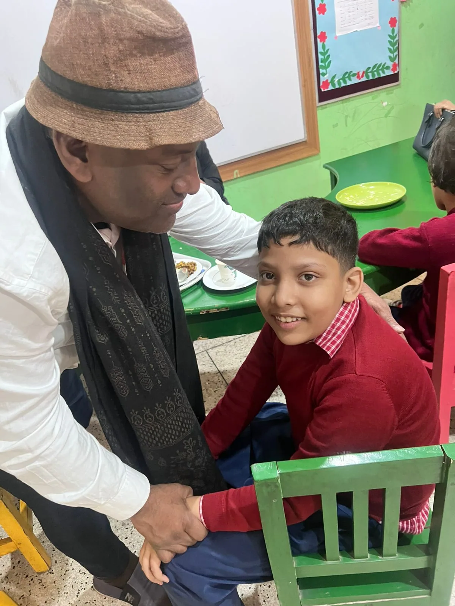
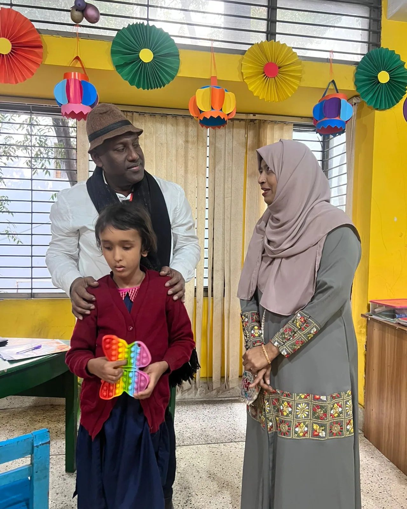
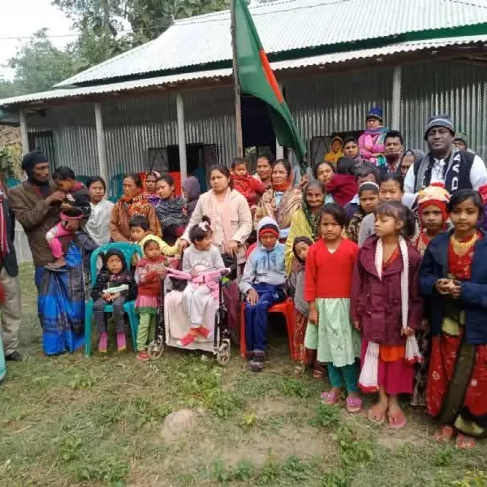
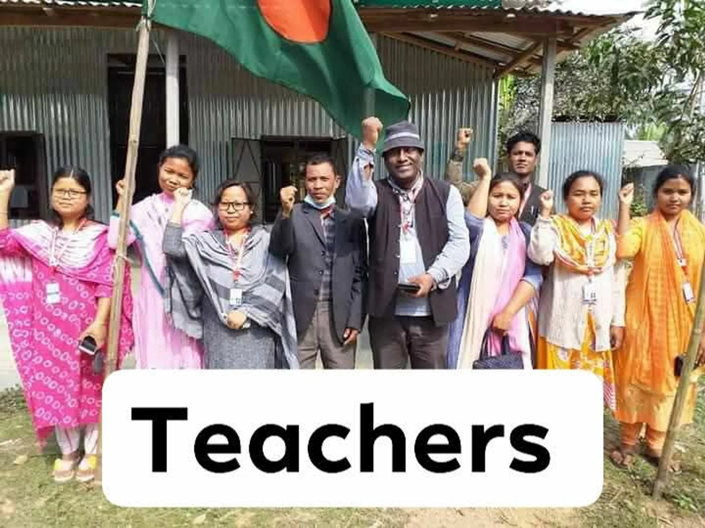
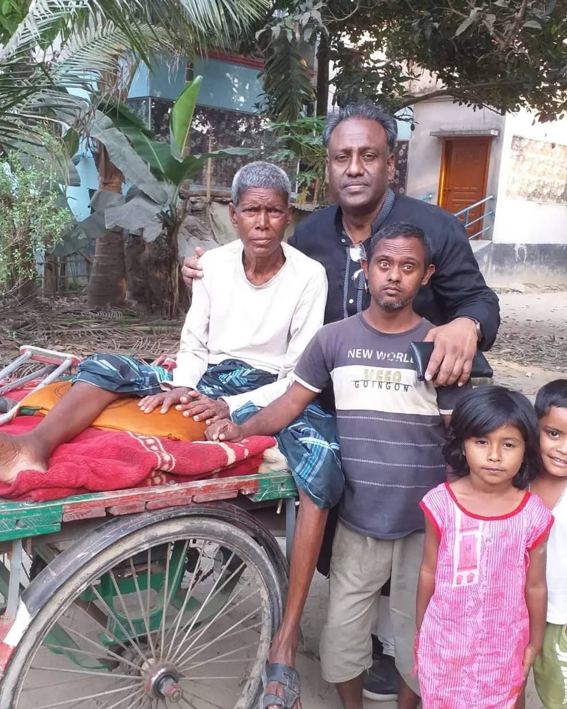
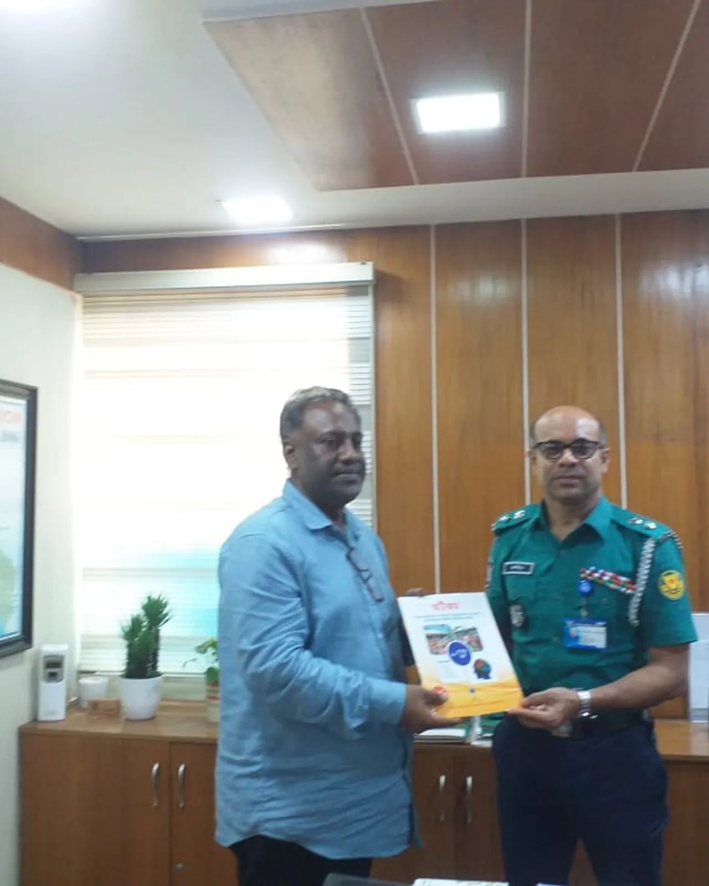
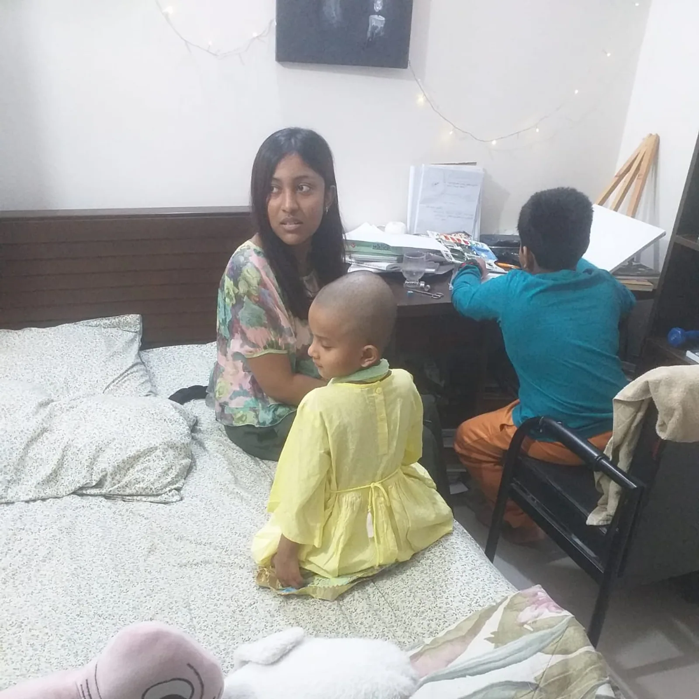
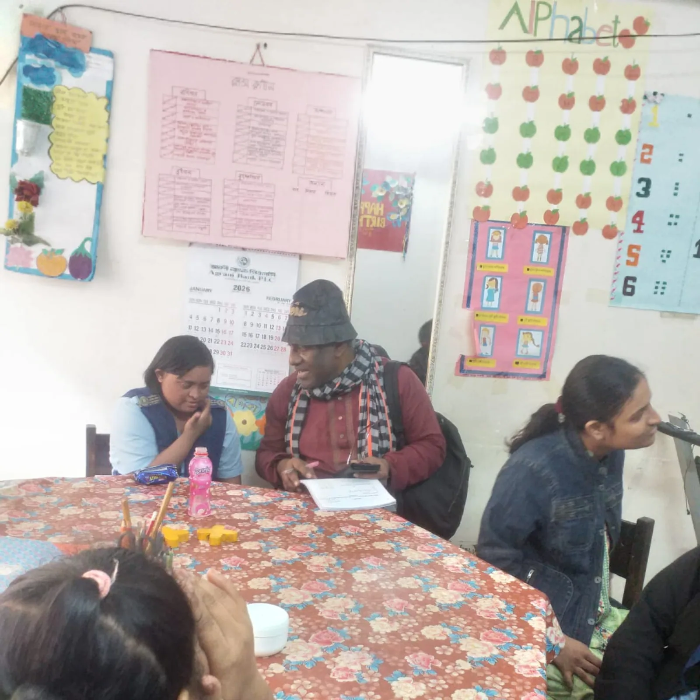
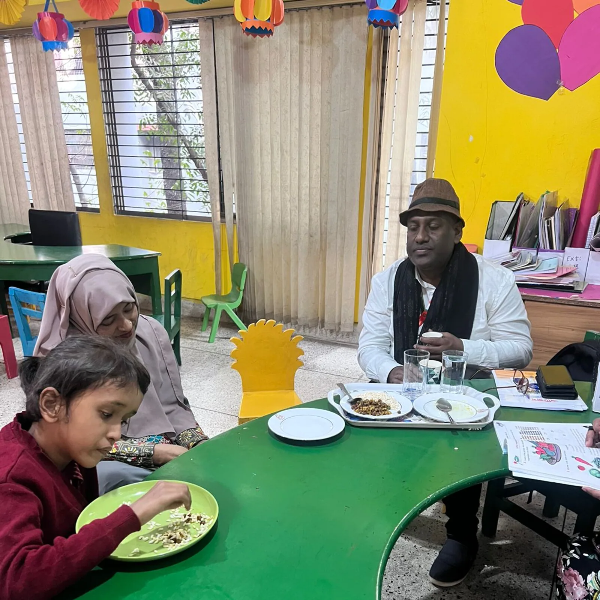
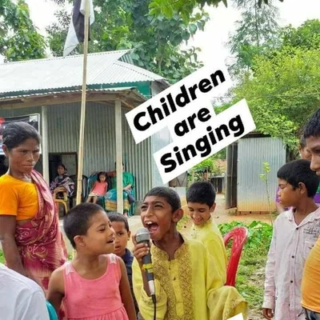

Special Education
A full-day school curriculum tailored to each child — speech therapy, occupational therapy and life skills, taught by our divine teachers.
Enter the schoolThe International Autism Foundation has walked, since 2013, with children who the world forgets to see. Through Special Education, Health Care and Nutrition, we build an autism-friendly society in the jungles of Madhupur — one child, one prayer at a time.




§ 01 — The Manifesto
A note from our long, unhurried work in rural Bangladesh.
There is a child in Madhupur who speaks in colours, not in words. There is a mother who has learned, over twelve quiet years, to listen with her hands. And there is a school at the edge of the jungle where the bell does not ring for anyone to hurry.
We are not a campaign. We are the daily, patient labour of keeping divine children close — feeding them, teaching them, healing the small wounds a world of noise leaves behind. Our ambition is small: build a village where autism is not a diagnosis to survive, but a way of being that is honoured.
We are funded entirely by the blessings of people who choose not to look away. You must be blessed and rewarded in your eternal life, we say — and we mean it, every single word.
§ 02 — The Journey
The foundation's journey, told in the rhythm of the land — scroll to follow the thread.
Black & White English Musical Band is formed — Masud Rana's first public work. The same devotion that will one day walk with divine children begins here, in music.
Masud Rana Black & White — later a PhD researcher on autism — founds the International Autism Foundation on a simple promise: no family should walk alone with their divine child.
The Daily Black & White rises alongside the Foundation — words and work, side by side, each carrying the other forward.
The Daily Human Rights joins the first publication — carrying stories of those the world so often tends to forget.
Black & White Point on Sheikh Shaheb Bazar Avenue begins as our urban liaison — a window from the capital into the village.
International Autism Foundation Journal begins to gather what we learn from our divine children — so others, elsewhere, may learn too.
The International Autism Research Center opens — quiet research, begun on our own soil, documenting how divine children heal, play and grow.
Black & White Autism School College University of Humanity is established inside Madhupur jungle — a campus where children learn under open skies.
The Global Autism Awareness Campaign carries the Foundation's voice beyond Bangladesh — partnering, teaching, inviting the world to see.
Doctors, dentists and therapists arrive once a month, free of charge, for divine children and their mothers — a small, insistent act of care.
The International Forum for Divine Children with Autism, Parents, Teachers, Caregivers & Volunteers gathers every hand that holds this work — the Foundation's family, openly convened.
We are building Black & White Autism Village — a self-sufficient world of farms, classrooms and clinics designed, in every gentle detail, around autism.
§ 03 — Three Pillars
Three quiet, durable promises we keep every single day — to teach patiently, to heal kindly, and to nourish wholly.
A full-day school curriculum tailored to each child — speech therapy, occupational therapy and life skills, taught by our divine teachers.
Enter the schoolMonthly free health camps for divine children and their mothers — general medicine, dental, check-ups and referrals.
See the campDaily balanced meals, nutrition training for mothers, and produce grown on our own land — food as medicine, as ritual.
Inside the kitchen§ 04 — Where We Are
Two campuses in the fields and jungle of Tangail, and one city office in Dhaka — every one of them a door always open.
Black & White Autism Village, Black & City, Vutia, Pirgacha, Madhupur, Tangail.
Black & White Autism Village, Black & White City, Hazrabari, Dhanbari, Tangail.
Black & White Point, 31 Sheikh Shaheb Bazar Avenue, Azimpur, Lalbagh, Dhaka - 1211.
§ 05 — Projects

Black & White Autism Village — the beating heart of our work inside the Madhupur jungle.

A second campus rooted in the farmland of Tangail — Vutia, Pirgacha, Madhupur.

31 Sheikh Shaheb Bazar Avenue, Azimpur, Lalbagh — our urban liaison.
"Need your blessings and cooperation for our Divine Children with Autism. You must be blessed and rewarded in your eternal life."
§ 06 — Voices
"They did not ask me why my boy does not look people in the eye. They simply taught him, patiently, until one day he looked at me."

"Our classroom has no bell. We begin when the children are ready, and the lesson ends when the child smiles."

"The health camp is my calendar. Every month I wait, and every month they come — not once have they missed."

"I came as a volunteer for a weekend. Three years later I am still here, and I have never been more useful to anyone."

§ 07 — The Pledge Wall
A quiet, living space for friends of the Foundation. Write a few words for our divine children — a prayer, a wish, a promise — and it will stay here on the wall.
"Every divine child is a whole universe. Teach them with slowness."
§ 08 — The Questions You Ask
Stand with us
We do not chase donations. We invite you into a quiet, decades-long work. Whether you give time, voice, money, or prayer — every act lifts a divine child closer to a life of dignity.